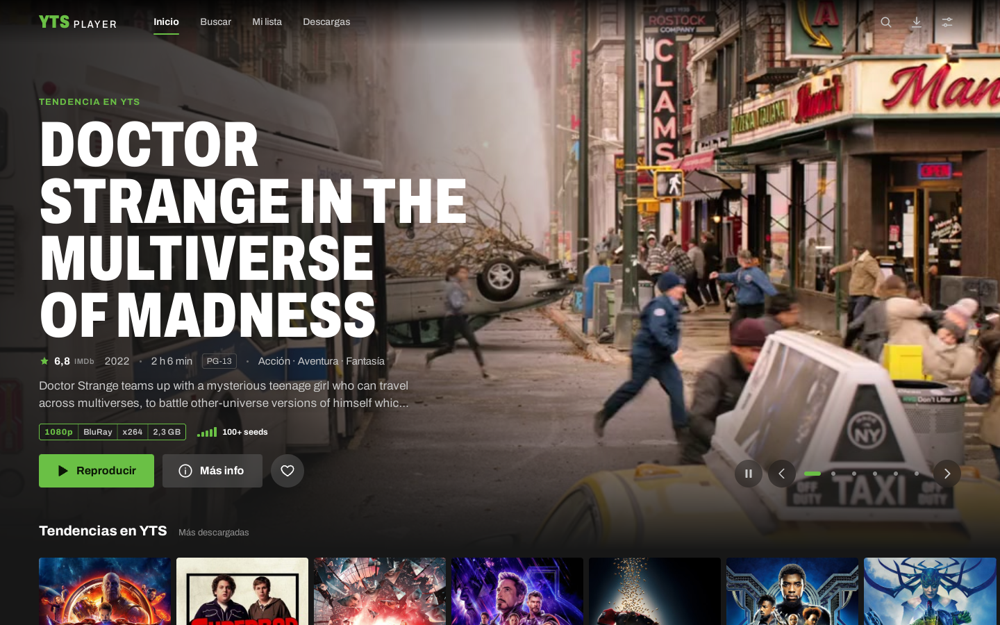
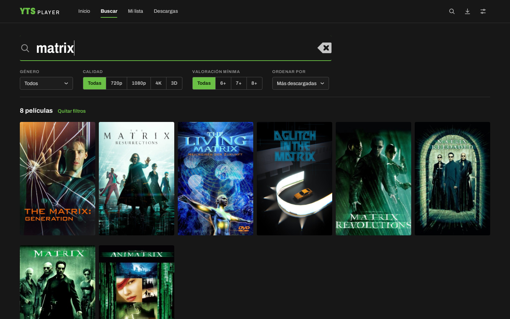
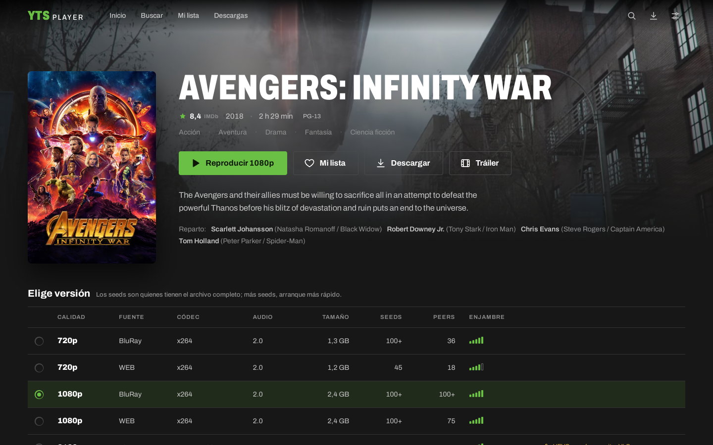

Una app de escritorio para Windows y Linux: el catálogo de YTS como en Netflix, la película empieza mientras se descarga y los subtítulos en español se ponen solos.
v1.1.0 · 5 oct 2026Windows 10/11LinuxCódigo abierto · MIT
YTS Player

00:00
AhoraAbres la app
Tiempos de ejemplo: dependen de tu conexión y de cuánta gente comparte la película.
Abres la app y ya sabe qué te gusta
El inicio cambia contigo: recomendaciones según lo que viste, lo que guardaste en tu lista y tus géneros, más filas de tendencias, recientes y mejor valoradas.
Porque viste InterstellarCiencia ficción
1080pAd Astra6,5 · 2019
2160pGravity7,7 · 2013
1080pThe Martian8,0 · 2015
1080pArrival7,9 · 2016
720pContact7,5 · 1997
Porque está en tu listaAnimación
1080pCoco8,4 · 2017
1080pUp8,3 · 2009
2160pSoul8,0 · 2020
1080pWall·E8,4 · 2008
1080pBig Hero 67,8 · 2014
Encuentra cualquier cosa al escribir
Busca por título y filtra por género, calidad o valoración. Los filtros siguen ahí cuando vuelves.
YTS Player

Eliges versión sabiendo cómo va a ir
Calidad, tamaño y cuánta gente la comparte, a la vista antes de darle a play. Las barras verdes te dicen si arrancará rápido.
YTS Player

CalidadFuenteTamañoEnjambre
Empieza mientras se descarga
No esperas a que baje entera: con unos pocos megas listos, arranca. Y puedes adelantar a cualquier punto de la película.
Avengers: Infinity War
1080pBluRayx2642,4 GB
Conectando…
DescargadoLo siguientePendiente
Peers0
Velocidad0,0MB/s
Listo0,0MB
Subtítulos en español, sin buscar nada
La app los encuentra y elige los que mejor encajan con tu versión. ¿Van adelantados? Ajusta el retraso al vuelo, o arrastra tu propio .srt.
Avengers: Infinity War1080pBluRayx264
Subtítulos
Españolautomático
English
Cargar .srt…
RetrasoG0,0 sH
—¿Cuánto tiempo nos queda?
—El suficiente, si nos vamos ya.
—Entonces no mires atrás.
1:12:41 / 2:29:00Español · automático
Lo dejas, y retoma en el segundo exacto
Continuar viendo te devuelve a donde ibas. Y si prefieres tenerla sin conexión, descárgala: pausa, reanuda y elige la carpeta.
Avengers: Infinity WarQuedan 1 h 7 min · 1:22:10 de 2:29:00
Para explorar y ver, no. Para los subtítulos automáticos necesitas una API key gratuita de OpenSubtitles; se pega una vez en Ajustes. Cómo conseguirla.
Windows dice que “protegió tu PC”. ¿Es normal?
Sí: el instalador no está firmado, porque un certificado de firma cuesta dinero. Pulsa Más información → Ejecutar de todas formas. El código está abierto en GitHub.
¿Por qué algunas versiones se abren en VLC?
Algunas versiones 4K usan un formato (x265/HEVC) que la app no siempre puede reproducir. Cuando pasa, te ofrece abrirla en VLC con sus subtítulos, o elegir otra versión.
¿Hay versión para Mac?
Todavía no. Por ahora, Windows 10/11 y Linux (.deb, .rpm y AppImage).
¿Dónde guarda las películas y los ajustes?
En tu carpeta de usuario, y puedes mover la caché y las descargas al disco que quieras desde Ajustes. Todas las rutas.
Aviso legal
YTS Player es solo un cliente: no aloja, sube ni distribuye contenido. Muestra el catálogo público de la API de YTS y usa BitTorrent para descargar lo que tú eliges; mientras descargas, también compartes partes del archivo con otras personas.
Gran parte de ese catálogo tiene derechos de autor, y descargarlo o compartirlo puede ser ilegal en tu país. El uso de la app es responsabilidad de quien la usa. Este proyecto no tiene relación con YTS ni con OpenSubtitles. Aviso legal completo.